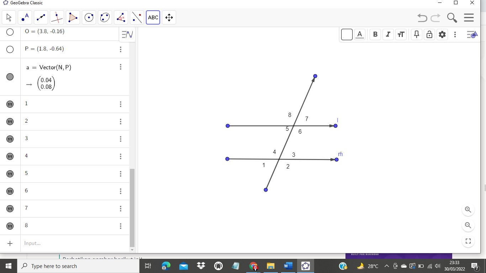

3. Besar penyiku suatu sudut 25∘25∘. Besar pelurus sudut tersebut adalah...
Jawab:
Jika α adalah sebuah sudut, maka besar penyiku sudut tersebut adalah 90 ̊ − α. Sehingga apabila besar penyiku suatu sudut 25 ̊ maka besar sudut tersebut adalah 90 ̊ − 25 ̊ = 65 ̊.
Jika β adalah sebuah sudut, maka besar pelurus sudut tersebut adalah 180∘−β. Sehingga besar pelurus 65 ̊ adalah 180 ̊ − 65 ̊ = 115 ̊.
4. Pasangan sudut luar sepihak adalah…

Jawab:
Ketika dua garis sejajar dipotong garis ketiga, maka sudut yang berada di sisi luar dan berada pada sisi yang sama dengan garis ketiga disebut sudut luar sepihak. Dari gambar di atas pasangan sudut luar sepihak adalah ∡1 dengan ∡8 dan ∡2 dengan ∡7.
5. Apa yang dimaksud dengan sudut berpenyiku?...
Jawab:
Yaitu dua sudut yang jika dijumlahkan maka hasilnya akan 90 ̊ dan membentuk sudut siku-siku.